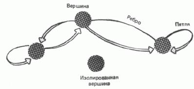
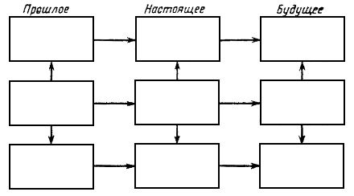

|
На
главную
Глава
1. Предмет и методы анализа
Предмет и подходы
Предмет анализа
Предметом нашего анализа будет
религия денег. То, что мы привыкли называть капитализмом
или рыночной экономикой, можно понять, только посмотрев на это
явление, как на полноценную религию. Почти все мы находимся внутри
этой религии, во многом мы абсолютно и искренне верим в неё, даже
если не осознаём этого. Так же как искренне верующий в Бога не
может представить, что Бог на самом деле не существует, что он
– плод воображения, так и нам очень тяжело выйти за рамки религии
денег и цифр. Эта книга подробно описывает, что представляет собой
религия денег. Как относиться к ней – это личный вопрос читателя.
В отличие от ислама, христианства
или буддизма, построенных на естественном языке, религия денег
в качестве своего языка использует символы математики и физики.
Будучи математической, своего рода мета-религией, она внешне
не входит в противоречие с религиями, основанными на словах. Но
на самом деле она ведёт борьбу за полное вытеснение и уничтожение
любой иной веры и за полное подчинение себе сознания людей.
Суммируя религию денег, можно
выделить три основные особенности:
1.
Главным принципом религии
денег является получение удовольствия от насилия. Она призывает
бить слабого, обманывать ближнего. Этот принцип прямо противоположен
христианству, это принцип Антихриста.
2.
Эволюция насилия над человеком
завершилась переходом к прямому насилию над сознанием, к рабству
сознания. Религия денег превратила изобретение телевидения
в абсолютное оружие массового поражения сознания.
3.
Начиная с 1960-х годов в
странах Запада, а с 1990-х годов в России, идёт стремительный
процесс окончательного перехода к обществу, противоположному христианскому
или святому обществу. Создаётся языческое, иными словами поганое
общество.
С научной точки
зрения религия денег представляет собой модель управления обществом.
Это весьма ограниченная одномерная модель, основанная (1) на присвоении
числовых значений всему, что есть в мире; (2) на использовании
пяти арифметических операцийи (3) критерия максимизации транзакций. В эту модель
жрецы религии денег заставляют вписываться всё существующее в
мире. То, что не вписывается – уничтожается.
Конечная цель
нашего анализа – понять внутренние механизмы религии денег и выработать
способы защиты индивидуального и общественного сознания.
Подходы к анализу
Анализ сознания человека или
общества по сути не может быть независимым и универсальным. Можно
быть относительно объективным при анализе телесного и физического,
но для анализа сознания всегда приходится выбирать какой-то субъективный
угол зрения, угол отражения, субъективную точку отсчёта.
Попытки объявить отношение к
истории, к обществу или к сознанию объективными, заранее заложенными,
являлись бы попыткой подавить все остальные точки зрения.
Сегодня выбор правильной точки
отсчёта очень непрост. При анализе религии денег мы будем
изначально отталкиваться от трёх главных принципов Русского духа:
–
защищай слабого,
–
ищи истину,
–
живи по совести.
С другой стороны, нашей отправной
точкой станет преобладающее общественное сознание. Большинство
из нас живут в мире, который сформирован школой, университетом
и повседневностью. Мы будем исходить именно из этих представлений,
из здравого смысла, а не из языка религии или из представлений
уединённых философов, которые не знакомы и не очень понятны обычному
человеку.
*
* *
Хотим ли мы, осознаём ли мы
или нет, но почти всё современное русское научное представление
о человеке и об обществе основано на фундаменте марксизма.
В нашей философии, в управляющей
модели сознания верхнего уровня, к 1980-м годам накопилось множество
противоречий. После 1986 года произошёл сбой. Наш русский храм
знания сильно разрушен и многими покинут. В результате массовое
сознание либо ищет убежища в более простых, примитивных формах,
либо уходит в тёмные ложи религии денег.
Марксизм-ленинизм, как и любая
система знаний, чтобы оставаться адекватной действительности,
нуждается в постоянном развитии. Несомненно, что мир существенно
изменился со времени появления марксизма, и марксизм нуждается
в серьёзном обновлении – или в замене. Но заменить марксизм сможет
только теория масштаба не меньшего, чем сам марксизм.
Чтобы критиковать марксизм,
чтобы победить марксизм, надо предложить новую систему знаний,
новую философскую теорию, которая была бы не более примитивной
и более фрагментарной, но более системной, более глубокой, более
широкой, чем марксизм. Абсолютное большинство современных критиков
марксизма не только не придерживаются никакой философской системы,
но они даже не осознают, что такое философская система.
Рыночная экономика в своём самопонимании
не двинулась дальше «невидимой руки рынка» двухсотлетней давности.
Многие демократы и рыночники в РФ на самом деле не выходят за
рамки марксистского истмата – исторического материализма. Они
просто считают не социализм, а «развитой капитализм» высшей формацией
в истории человечества.
Несмотря на многолетние старания
демократов, марксизм остаётся неприступной крепостью, которая
намного выше их головы. По иронии истории, чем сильнее в наши
дни дегенерирует российское общество, тем адекватнее его отражает
марксизм. Чувствуя своё бессилие, демократы и не пытаются создать
что-то лучшее, но просто уничтожают подряд все знания и всю нашу
историю.
Начало было положено разоблачениями
«культа личности» во времена XX
съезда. В общественном сознании попытались сделать чёрную дыру
размером с 1929 по 1953 год. Во времена гласности чёрную дыру
увеличили до 70 лет. Вскоре она стала расползаться и на всю четырёхсотлетнюю
историю Руси со времён Ивана Грозного.
Но на этом чёрная дыра демократии
не остановилась. Сегодня уже говорится, что само принятие Русью
православия, а не католичества, было ошибкой. Дыра расползается
до десятого века. Что будет дальше? Дальше идёт отрицание христианства
как такового. Нас ждёт чёрная дыра размером в две тысячи лет.
Вместе с ней наступает поганое общество.
Сомневаетесь? Россия запаздывает
на каких-нибудь 20-30 лет. Запад уже почти прошёл стадию полной
дехристианизации.
*
* *
Мы рассматриваем сознание как
своего рода сложную самосовершенствующуюся систему или программу,
в которой по мере развития накапливаются перекосы и противоречия.
Наша задача – разрешить их. В противном случае развитие становится невозможным,
и начинается саморазрушение.
В истории естественных наук
не раз возникала ситуация, аналогичная нынешней ситуации в философии.
По мере развития оптики, в корпускулярной теории света накапливалось
множество противоречий. К счастью, физикам не приходило в голову
из-за этого выкинуть корпускулярную теорию и вернуться к астрологии.
Была создана более сложная и более совершенная волновая теория
света.
Когда геометрия Евклида исчерпала
своё развитие, была создана более масштабная неевклидова геометрия,
которая включила евклидову как часть, как одну из возможных геометрий.
Когда стали очевидны ограничения классической механики, была создана
теория относительности. Теория относительности не уничтожила механику
Ньютона. Она определила границы её применимости.
К сожалению, в общественных
науках и простые люди, и учёные, руководствуются не столько здравым
смыслом, сколько ведут себя как дикари, готовые немедленно съесть
жрецов, которые только вчера потеряли власть, и сжечь их все святые
свитки.
*
* *
В исследовании религии денег,
где возможно, мы будем использовать западную науку. Особенно
это важно в некоторых разделах политэкономии, а также для понимания
способов насилия над сознанием.
Но мы не можем взять западное
знание за основу, поскольку единая картина мира в нём, в отличие
от русского знания, отсутствует. Западное знание раздроблено,
растаскано на части феодалами науки (и псевдонауки). Феодалы заинтересованы
не в поиске истины, но в сохранении своей локальной крепости и
в увеличении арендной платы с желающих побыть в ней.
Русское знание – это единый
храм, и он должен оставаться единым. Так же как и русское государство
должно оставаться единым.
*
* *
С изобретением мгновенных способов
распространения информации резко увеличилась скорость изменения
общественного сознания. История начала сжиматься. Те процессы,
которые в древности шли веками, сейчас происходят за одно-два
поколения. Наша ситуация одновременно и очень опасна, и очень
интересна. За время жизни одного человека пройдёт смена цивилизации.
Сейчас достаточно просто открыть глаза, чтобы увидеть, как из
слизи либерализма вылазит поганое рыло Древнего Рима. То, что
мы читали в учебниках истории, вдруг становится сегодняшним днём.
Вопрос в том, чем закончится
смена цивилизации. СССР дал нам уникальный шанс увидеть ожидающее
нас будущее. Он создал защитный купол, который охранял нас в то
время, пока Запад стремительно строил поганое общество. Советский
Союз выиграл для нас 30 лет жизни без тотального насилия сознания.
Но половина этого запаса уже израсходована. Мы уже видим, каким
вырастает первое поколение, которое не застало нормальную жизнь.
Как мы воспользуемся оставшимися годами? Времени осталось на одно
поколение.
Целью автора не является переубедить
вас в чём-то или ответить на все вопросы. Нам не столь важно открыть
что-то новое, сколько проанализировать и систематизировать уже
известное. Относитесь к этой книге как к гипотезе. Продолжайте
читать те же газеты, смотреть те же телепередачи. Просто посмотрите
на всё происходящее и под новым углом зрения. Проверьте, поможет
вам ли эта гипотеза лучше понять и объяснить то, что происходит.
Некоторые термины
Выделим основные понятия, которые
мы будем использовать. С термином религия денег мы уже
определились.
Нам надо выбрать термин для
обозначения того, что обычно понимается под развитыми странами
Запада и Азии, или странами «золотого миллиарда». Раньше эти же
страны называли колониальными, капиталистическими и империалистическими.
Все они не столько государства, сколько симбиоз правительств и
наднациональных корпораций. Мы будем называть их странами Орды.
Далее, нам нужно название для
сторонников и проповедников религии денег в России и во всём мире.
Не найдя лучшего слова, у нас стали употреблять слово «демократы»,
иногда «либералы». Но эти слова перевёртывают смысл демократии
и либерализма. Иногда говорят «жрецы бога Мамоны», что точно,
но длинно; «сатанисты», что неплохо, но имеет более узкий смысл.
Есть ещё термин «жиды», который у большинства людей ассоциируется
с евреями; но религию денег проповедуют не только евреи, и не
все евреи проповедуют религию денег. Принадлежность к той или
иной религии – это не вопрос национальности, это вопрос веры.
Всех, кто придерживается мировоззрения
религии денег, мы будем называть погаными, или язычниками.
Попробуйте заменить в газетах,
которые вы читаете, слово «демократ» и схожие с ним по смыслу
на «поганый». Мы так блестеть заставим заново привычные нам понятия.
Например, Дем Выбор России – Поганый Выбор России, или СПС – Союз
Поганых Сил.
Посмотрите,
какое словосочетание вернее отражает смысл:
построение
демократического общества в России или построение поганого
общества;
либеральная
экономика или поганая экономика;
власть
демократии или власть поганых;
издания
демократической ориентации или издания поганой ориентации;
демократ
Чубайс или ... ?
Методы
анализа
Приступая к анализу, вспомним
законы диалектики. Затем мы приведём основные понятия системного
анализа и изложим основы Теории Решения Изобретательских Задач.
Законы диалектики
$
Во время чтения законов диалектики мысленно выберите в качестве
объекта устройство русского общества. Подумайте о процессе разрешения
противоречий в 1917 и в 1991 году. Подумайте о том, в каком направлении,
согласно законам диалектики, должно пойти дальнейшее развитие.
Закон
Единства и Борьбы Противоположностей
Развитие объективного мира и
познания осуществляется путём раздвоения единого на взаимоисключающие
противоположные моменты, стороны, тенденции; на их взаимоотношения.
"Борьба" и разрешение противоречий, с одной стороны, характеризует
ту или иную систему как нечто целое, качественно определённое,
а с другой – составляет внутренний импульс её изменения, развития,
превращения в новое качество.
Выражение "борьба противоположностей"
содержит следующий смысл: 1) всякая органическая система заключает
в себе внутреннее противоречие; 2) это противоречие непрерывно
разрешается и воспроизводится; 3) оно осложняется тем, что каждая
из обладающих относительной самостоятельностью внешних противоположностей
сама противоречива; 4) только через полное разрешение таких противоречий
целого возможно прогрессивное преодоление его и переход к высшей
форме.
Закон
Перехода Количественных Изменений в Качественные
Изменение качества объекта происходит
тогда, когда накопление количественных изменений достигает определённого
предела. Процесс коренного изменения данного качества, "надлом"
старого и рождение нового есть скачок. Переход явления из одного
качественного состояния в другое есть единство уничтожения и возникновения,
бытия и небытия, отрицания и утверждения. Скачок включает в себя
момент снятия прежнего явления возникающим; при этом качественные
и количественные изменения взаимно обусловливают друг друга.
Закон
Отрицания Отрицания
Отрицание отрицания характеризует
направление процесса развития, единство поступательности и преемственности
в развитии, единство возникновения нового и относительной повторяемости
некоторых моментов старого.
Развитие есть возникновение
логического противоречия и снятие его в дальнейшем; в этом смысле
оно есть зарождение внутреннего отрицания предыдущей стадии, а
затем и отрицание этого отрицания. Поскольку отрицание предыдущего
отрицания происходит путём снятия, оно всегда есть в известном
смысле восстановление того, что отрицалось, возвращение к уже
пройденной стадии развития. Однако это не простой возврат к исходной
точке, а "...новое понятие, но более высокое, более богатое понятие,
чем предыдущее, ибо оно обогатилось его отрицанием или противоположностью;
оно, стало быть, содержит в себе старое понятие, но содержит в
себе более, чем только это понятие, и есть единство и его и его
противоположности". Отрицание отрицания оказывается, таким образом,
всеобщей формой раздвоения единого и перехода противоположностей
друг в друга.
Последовательность циклов, составляющую
цепь развития, можно образно представить в виде спирали. При таком
изображении каждый цикл выступает как виток в развитии, а сама
спираль – как цепь циклов. Хотя спираль и является лишь образом,
выражающим связь между двумя или более точками в процессе развития,
этот образ удачно показывает общее направление развития, осуществляемого
в соответствии с отрицанием отрицания: возврат к уже пройденному
является не полным; развитие не повторяет проложенных путей, а
отыскивает новые, сообразно с изменением внешних и внутренних
условий; повторение известных черт, свойств, уже имевших место
на прежних этапах, всегда является тем более относительным, чем
сложнее процесс развития.
Спиралевидность характеризует
не только форму процесса развития, но и темпы этого процесса:
с каждым новым витком спирали преодолевается всё более значительный
путь, поэтому можно говорить о том, что процесс развития связан
с ускорением темпов, с непрерывным изменением внутреннего масштаба
времени развивающейся системы. Эта закономерность обнаруживается
как в развитии общества и природы, так и в развитии научного познания.
Понятие
Противоречия
Диалектическое
противоречие – взаимодействие противоположных, взаимоисключающих
сторон и тенденций предметов и явлений, которые вместе с тем находятся
во внутреннем единстве и взаимопроникновении, выступая источником
самодвижения и развития объективного мира и познания.
Логическое
противоречие – пара противоречащих друг другу суждений, то есть
суждений, каждое из которых является отрицанием другого. Противоречием
называется также сам факт появления такой пары суждений в ходе
какого-либо рассуждения или в рамках какой-либо научной теории.
Основные понятия системного анализа
Анализ и Синтез
Постепенно
и поэтапно разрешать противоречия позволяет наличие аналитического
и синтетического образов мышления. Суть анализа состоит в разделении целого
на части, в представлении сложного в виде совокупности более простых
компонент. Но чтобы познать целое, необходим и обратный процесс
– синтез. Это относится не только к индивидуальному мышлению,
но и к общечеловеческому знанию.
Модель
Модель
– это идеальная конструкция, образ, отображение оригинала, объекта
анализа, построенное средствами мышления, сознания. Языковые модели,
то есть модели, построенные средствами естественного языка, являются
своего рода конечной продукцией мышления, уже готовой или почти
готовой для передачи другим носителям языка.
$
Рассмотрите свободный рынок как модель человеческого общества.
Познавательная
и Прагматическая Модель
Различают
два основных типа моделей по назначению – познавательную и прагматическую
(управляющую).
Познавательная
модель является формой организации и представления знаний, средством
соединения новых знаний с имеющимися. Познание ориентировано в
основном на приближение модели к реальности, которую модель отображает.
Прагматическая
(управляющая) модель является средством управления, средством
организации практических действий, способом представления образцово
правильных действий или их результата; является рабочим представлением
целей. Поэтому использование прагматических моделей состоит в
том, чтобы при обнаружении расхождений между моделью и реальностью
направить усилия на изменение реальности так, чтобы приблизить
реальность к модели.
Различие между познавательной
и прагматической моделью:
а)
познавательная модель подгоняется под реальность,
б)
прагматическая модель подгоняет реальность под модель.
Познавательные модели отражают
существующее, а прагматические – не существующее, но желаемое
и возможно осуществимое.
$
Как вы считаете, какой тип модели использует общество свободного
рынка?
Согласование
Модели со Средой
Чтобы
осуществить то, для чего модель была создана, недостаточно только
наличия модели. Модель должна быть в достаточной степени согласована
со средой (культурой). Это свойство модели называется ингерентностью.
$
Как вы считаете, насколько модель свободного рынка согласована
с русской средой?
Подобие
и Ограниченность Модели
Реальные
модели служат заместителями оригинала благодаря своему подобию
с ним, то есть похожести. Возможны три вида подобия:
–
прямое, устанавливаемое
через физическое взаимодействие,
–
косвенное, устанавливаемое
через аналогию, т.е. через общую абстрактную модель,
–
условное, устанавливаемое
через соглашение.
В каждой модели есть доля истины,
то есть в чем-то любая модель правильно отражает оригинал. Степень
истинности модели проявляется при практическом соотнесении модели
и оригинала ("практика – критерий истинности"). Кроме безусловно
истинного, в модели есть и верное лишь при определенных условиях
и нечто "неверное", то есть не имеющее отношения к оригиналу.
Мир, частью которого мы являемся,
бесконечен, как бесконечен и любой объект, не только в пространстве
и времени, но и в своих связях с другими объектами, и в том, что
к любому числу отношений, в которых мы рассматривали данный объект,
всегда можно добавить еще одно. Любая модель конечна, ограничена,
поскольку:
1)
модель отображает объект анализа лишь в конечном числе отношений
с другими объектами;
2)
способы описания модели ограничены, поэтому она всегда упрощенно
отображает оригинал.
Адекватность
модели
Модель,
с помощью которой успешно достигается поставленная цель, называется
адекватной этой цели. Понимание адекватности не полностью
совпадает с требованиями полноты, точности и правильности (истинности):
адекватность означает, что эти требования выполнены не
вообще (так сказать, безмерно), а лишь в той мере, которая достаточна
для достижения цели.
$
Как вы считаете, какова цель свободного рынка?
Система
Система
– это совокупность взаимосвязанных элементов, обособленная от
среды и взаимодействующая с ней как целое. Признаками системы
являются (1) структурированность, (2) взаимосвязанность составляющих
частей, (3) подчиненность организации всей системы определенной
цели. Цель функционирования системы также называют главной функцией
системы.
Модель
«чёрного ящика»
Модель
системы типа «чёрный ящик» отображает только связи системы
со средой, в виде перечня "входов" и "выходов". Трудность построения
модели "черного ящика" состоит в том, что надо решить, какие из
многочисленных реальных связей включать, а какие не включать в
состав модели. Кроме того, всегда существуют и такие связи, которые
нам неизвестны, но они-то и могут оказаться существенными.
Название "черный ящик" образно
подчеркивает полное отсутствие сведений о внутреннем содержании
"ящика". В этой модели задаются, фиксируются, перечисляются только
входные и выходные связи системы со средой (даже "стенки ящика",
то есть границы между системой и средой, в этой модели обычно
не описываются, а лишь подразумеваются, признаются существующими).
Примеры.
Автомобиль как чёрный ящик.
Главная функция – перемещать объект. Вход – скорость неподвижного
человека или груза, выход – высокая скорость.
Усилитель звука в концертном
зале как чёрный ящик. Главная функция – усиливать звук. Вход –
тихий звук голоса человека (через микрофон), выход – громкий звук
(через громкоговорители).
$
С точки зрения модели рыночной экономики любая коммерческая фирма
или индивидуальный человек являются чёрным ящиком с одним входом
и одним выходом. Что является этим входом и выходом?
Системы
с обратной связью
Существует
два наиболее интересных для нашего анализа типа систем – с положительной
и с отрицательной обратной связью.
Система с положительной
обратной связью – система, внутри которой существует такая обратная
связь, которая приводит к тому, что увеличение выхода системы
увеличивает вход, что в свою очередь увеличивает выход
и так далее. Рано или поздно такая система саморазрушается от
перегрузки, либо разрушает все доступные ей источники энергии
(если не срабатывает предохранитель).
Положительную обратную связь
легко получить, если поднести микрофон к громкоговорителю, когда
оба они подключены к одному усилителю. Начнётся самовозбуждение
– чем громче звук из громкоговорителя, тем сильнее сигнал на входе
микрофона, тем громче звук из громкоговорителя и так далее. Другим
примером является цепная реакция на ядерном реакторе, когда освободившиеся
нейтроны освобождают ещё больше свободных нейтронов, пока не происходит
взрыв.
В системе с положительной обратной
связью может существовать и противоположная ситуация, когда возникает
уменьшение выхода, которое приводит к уменьшению входа.
Например, вымирание населения – чем меньше рождается детей, тем
меньше новых родителей, тем меньше детей и так далее. В таких
системах идёт самоускоряющееся падение вниз. Падение можно переломить
только в том случае, если есть внешние источники, способные повлиять
на вход или выход. Системы с положительной обратной связью обычно
крайне нестабильны.
Система с отрицательной
обратной связью – система, внутри которой существует такая обратная
связь, которая приводит к тому, что увеличение выхода системы
уменьшает вход.
Обычно отрицательная обратная
связь используется для стабилизации какого-либо параметра. Например,
автопилот автомобиля автоматически снизит скорость, если будет
превышен допустимый предел. Система безопасности реактора автоматически
начнёт поглощать свободные нейтроны, если их число увеличится
до определённого уровня. Если саранча расплодится и съест всю
растительность, то саранча начнёт вымирать из-за отсутствия корма.
$
Как вы думаете, какой тип обратной связи существует в рыночной
экономике?
Модель
состава системы
Модель
состава системы отображает, из каких частей (подсистем и элементов)
состоит система. Главная трудность в построении модели состава
заключается в том, что разделение целостной системы на части является
относительным, условным, зависящим от целей моделирования (это
относится не только к границам между частями системы, но и к границам
самой системы). Кроме того, относительным является и выбор уровня
дробления, определение самой малой части – элемента. Для удобства
обычно применяют иерархические модели состава системы,
состоящие из нескольких уровней детализации.
Пример.
Автомобиль на верхнем уровне
состоит из корпуса, салона, движущей части. В зависимости от цели
анализа к этому уровню также можно отнести пассажиров и груз.
На уровне движущей части он состоит из двигателя, колёс, трансмиссии
и т.д. На уровне колеса он состоит из ступицы, резиновой камеры,
болтов крепления. Необходимость дальнейшего дробления и рассмотрения,
например, из чего состоит болт в колесе, зависит от цели анализа
автомобиля.
Модель
структуры системы
Модель
структуры системы отображает связи, взаимодействия, или отношения,
между компонентами модели ее состава, то есть совокупность связанных
между собой моделей "черного ящика" для каждой из частей системы.
Поэтому трудности построения модели структуры те же, что и для
построения модели "черного ящика".
В отношении участвуют не менее
двух объектов, а свойством мы называем некий атрибут одного
объекта. Любое свойство, даже если его понимать как потенциальную
способность обладать определенным качеством, выявляется только
в процессе взаимодействия объекта (носителя свойства) с другими
объектами, то есть в результате установления некоторого отношения.
Например, чтобы убедиться в том, что мяч – синий, мало иметь мяч,
нужны еще источник белого света и анализатор отраженного от мяча
света (при этом не всякий анализатор пригоден; например, глаз
дальтоника не может установить цвет мяча).
Свойство – это не атрибут объекта,
а лишь определенная абстракция отношения, экономящая мышление.
Мы "коротко и ясно" говорим, что стекло прозрачно, вместо того
чтобы каждый раз говорить об отношении между лучом света, падающим
на поверхность стекла, самим листом стекла и приемником света,
находящимся по другую сторону этого листа. Другими словами свойство
– это свернутое отношение.
Целевое воздействие одного объекта
на другой называется функцией этого объекта, которую он
может осуществлять благодаря наличию определённого свойства. Свойство
есть способность выполнять действие на другой объект и/или воспринимать
воздействие.
Пример.
Опишем отношения между компонентами
системы "усилитель звука": звуком, микрофоном, усилителем, громкоговорителем
и электротоком. Микрофон преобразует тихий звук в электроток,
усилитель усиливает электроток, громкоговоритель преобразует усиленный
электроток в громкий звук.
Граф
Граф
– это схема, в которой обозначается только наличие элементов и
связей между ними, а также (в случае необходимости) разница между
элементами и между связями.
Граф состоит из обозначений
элементов произвольной природы, называемых вершинами, и обозначений
связей между ними, называемых ребрами (иногда дугами). Часто бывает
необходимо отразить несимметричность некоторых связей; в таких
случаях линию, изображающую ребро, снабжают стрелкой. Если в графе
требуется отразить другие различия между элементами или связями,
то либо разным ребрам приписывают различные веса (взвешенные графы),
либо раскрашивают вершины или ребра (раскрашенные графы).

$
Подумайте, как отношения между людьми и фирмами в рамках рыночной
экономики можно представить в виде графов.
Суммируя
понятия системного анализа:
Анализ
и Синтез
Модель
– Познавательная и Прагматическая (управляющая) – Согласование
со средой – Подобие и Ограниченность – Адекватность
Система
– Чёрный ящик – Положительная и Отрицательная обратная связь –
Модель состава – Модель структуры – Свойство объекта – Функция
– Граф
Основы ТРИЗ
Теория Решения Изобретательских
Задач (ТРИЗ) была разработана в СССР, начиная с конца 1940-х годов,
советским инженером Г.С.Альтшуллером и школой его последователей.
ТРИЗ не была признана официальной наукой, исследования проводились
в основном на общественных началах. В настоящее время несколько
компаний и учебных заведений в странах Запада и Азии коммерчески
используют ТРИЗ. С материалами и ссылками по ТРИЗ можно подробно
ознакомиться в Интернет.
Основные методы исследований
в ТРИЗ – (1) анализ мирового патентного фонда и развития техники
и (2) анализ процесса поиска изобретательских идей.
Многоэкранная схема сильного мышления
Каждая
техническая система входит в надсистему, являясь одной из ее частей
и взаимодействуя с другими ее частями; но и сами системы тоже
состоят из взаимодействующих частей – подсистем. Признак талантливого
мышления – умение переходить от системы к надсистеме и подсистемам.
Для этого должны работать три мысленных экрана:
Когда
речь идет о дереве (системе), надо видеть лес (надсистему) и отдельные
части дерева (корни, ствол, ветки, листья – подсистемы). На каждом
этапе также необходимо видеть линию развития: как изменяются подсистема,
система и надсистема в прошлом, настоящем
и будущем:

Одновременно
надо представить такую же многоэкранную схему для альтернативных
и конкурирующих систем.
$
Подумайте, что является подсистемой, надсистемой и альтернативной
системой для рыночной экономики?
Линии жизни технических систем
Жизнь
технических систем (как и других систем, например, биологических)
можно изобразить в виде S-образной кривой, показывающей, как меняются
во времени главные характеристики системы (мощность, производительность,
скорость, число выпускаемых систем и т.д.). S-кривая
была получена в результате анализа истории развития множества
технических систем.
У
разных технических систем эта кривая имеет свои индивидуальные
особенности. Но на ней всегда есть характерные участки, которые
можно представить схематически, с подчеркнутым огрублением:
В
"детстве" (участок 1) техническая система развивается медленно.
Затем наступает пора "возмужания" и "зрелости" (участок 2) – техническая
система быстро совершенствуется, начинается массовое ее применение.
С какого-то момента темпы развития начинают спадать (участок 3)
– наступает "старость". Далее (после точки g)
возможны два варианта. Техническая система А либо деградирует,
становясь принципиально другой системой Б (современные парусники
не имеют таких высоких скоростей, на которых сто лет назад ходили
прославленные чайные клиперы), либо на долгое время сохраняет
(участок 4) достигнутые показатели (велосипед не претерпел существенных
изменений за последние полвека и не был вытеснен мотоциклом).
$
Подумайте о линии жизни религии и цивилизации.
* * *
S-кривой
можно описать и переход количественных изменений в качественные. По вертикальной оси отложим полезность
системы (соответствие своему назначению), по горизонтальной –
увеличение параметра системы.
Например, система – автомобиль,
полезность – перевозка пассажиров, тогда скорость автомобиля –
изменяемый параметр.
Точка a
соответствует минимальному уровню работоспособности системы. Точка
b
– точка насыщения, когда дальнейший рост не приводит к
увеличению полезности, а наоборот, к вреду. Участок 2 – участок
прямого роста, когда увеличение параметра напрямую приводит к
увеличению полезности.
Для автомобиля точка a
будет соответствовать скорости в 15-20 км/ч, от a
до b
чем выше скорость, тем приятнее езда. Точка b
– 200 км/ч (или ниже, в зависимости от дороги). Увеличение скорости
свыше 200 км/ч приведёт только к опасности.
Пример.
Слишком медленный процессор
в компьютере, до 120 МГц, вообще не даст возможности запустить
Виндоус. По мере увеличения скорости с 120 МГц до 500-600 МГц
будет получен прямой выигрыш в скорости работы Виндоус. Увеличение
скорости процессора свыше 600 МГц даст очень маленький выигрыш,
а то и никакого, и в конечном счёте увеличит цену компьютера,
принося вред.
$
Подумайте, где находятся точки минимальной достаточности и насыщения
для человека и общества при потреблении еды, лекарств, одежды.
Что происходит, если потребление продолжается после точки насыщения?
*
* *
От
чего зависит соотношение между участками? Иными словами, чем определяется
положение точек перегиба (a,
b,
g)
на "жизненной кривой" той или иной технической системы?
Изучение
кривых развития параметров различных технических систем (скорости
движения самолетов и кораблей, скорости бурения, роста энергии
ускорителей и т. д.) заставляет обратить внимание на то, что реальные
кривые заметно отличаются от ожидаемых теоретических кривых. Характер
различия показан на рисунке ниже, где штриховая кривая – теоретическая,
а сплошная – реальная.
Казалось
бы, с момента появления техническая система должна неуклонно (хотя
и не очень быстро) развиваться до a',
т. е. до момента перехода к массовому применению. На самом деле
переход к массовому применению (a")
начинается с опозданием и на более низком техническом уровне.
Период
быстрого развития технической системы должен был бы завершиться
в точке b',
там, где исчерпываются возможности использованного в системе принципа,
и обнаруживается экономическая нецелесообразность дальнейшего
развития данной системы (уровень 1).
Однако
этого не происходит: реальная точка b"
всегда намного выше теоретической b'.
Когда кривая А" доходит до уровня 1, в дальнейшем развитии системы
оказываются заинтересованными многие люди. Возникает инерция интересов
– финансовых, научных, карьерных и просто человеческих (боязнь
оставить привычную и обжитую систему). Инерция интересов оказывается
сильнее экономических факторов. Но и сами экономические факторы
умеют приспосабливаться к инерции интересов. Вплоть до уровня
2 система продолжает оставаться экономически выгодной за счет
разрушения и загрязнения внешней среды.
Типичным
примером может служить интенсивное строительство больших танкеров.
Катастрофа с танкером "Торри Каньон", когда 120 тысяч тонн нефти
попали в море, привела к тяжелейшим последствиям на побережьях
Англии и Франции. С тех пор океан не стал спокойнее, мореплавание
не стало безопаснее. Но уже построены танкеры в полмиллиона тонн
и в миллион тонн. Кривая А" идет к уровню 2. Экономичность, то
есть прибыль для владельцев судов, обеспечена за счет ущерба внешней
среде. Число больших танкеров увеличивается, скорость тоже возрастает
(хотя до сих пор нет эффективного решения проблемы торможения),
неуклонно растет опасность суперкатастрофы.
«Сегодня
это выгодно, остальное не имеет значения» – эта формула тянет
кривую А" вверх, к уровню 2 (экономично при условии причинения
вреда внешней среде). А потом все-таки достигается потолок – уровень
3, определяемый физическими пределами. Нельзя, например, втиснуть
на улицу больше автомобилей, чем там может поместиться, когда
автомобили стоят впритирку один к другому – от стенки до стенки.
Закон увеличения степени идеальности
системы
Анализ изобретений показывает,
что развитие всех систем идёт в направлении идеализации,
то есть элемент или система уменьшается или исчезает, а её функция
сохраняется.
Примеры.
Громоздкие и тяжёлые электронно-лучевые
компьютерные мониторы заменяются лёгкими и плоскими жидкокристаллическими.
Скорость процессора увеличивается в сотни раз, но его размер и
потребление энергии не повышаются. Сотовые телефоны усложняются,
но их размер уменьшается.
$
Подумайте об идеализации денег.
Элементы АРИЗ
Рассмотрим
базовые шаги Алгоритма решения изобретательских задач (АРИЗ).
1.
Началом анализа является составление структурной модели
ТС (как описано выше).
2.
Затем выделяется главное техническое противоречие (ТП).
Техническими
противоречиями (ТП) называют такие взаимодействия
в системе, когда положительное действие одновременно вызывает
и негативное действие; или если введение/усиление положительного
действия, либо устранение/ослабление негативного действия вызывает
ухудшение (в частности, недопустимое усложнение) одной из частей
системы или всей системы в целом.
Пример.
Для
увеличения скорости винтового самолёта надо увеличить мощность
двигателя, но увеличение мощности двигателя снизит скорость.
Часто
для выявления главного ТП требуется проанализировать причинно-следственную
цепочку (ПСЦ) связей и противоречий.
Пример.
Продолжим
ПСЦ для противоречия «увеличение мощности двигателя снизит скорость».
Для увеличения мощности двигателя надо увеличить объём двигателя,
для чего надо увеличить массу двигателя, что приведёт к дополнительному
расходу топлива, что увеличит массу самолёта, что сведёт на нет
выигрыш в мощности и снизит скорость.
3.
Производится мысленное отделение функций (свойств) от
объектов.
В
анализе любого элемента системы нас интересует не он сам, а его
функция, то есть способность выполнять или воспринимать определённые
воздействия. Для функций также существует причинно-следственная
цепочка.
Пример.
Главная
функция двигателя – не крутить винт, а толкать самолёт. Нам нужен
не сам двигатель, а только его способность толкать самолёт. Точно
так же нас интересует не телевизор, а его способность воспроизводить
изображение.
4.
Производится усиление противоречия.
Противоречие
следует мысленно усилить, довести до предела. Много – всё, мало
– ничего.
Пример.
Масса
двигателя вообще не увеличивается, но скорость самолёта возрастает.
5.
Определяются Оперативная зона (ОЗ) и Оперативное время
(ОВ).
Следует
выделить тот точный момент времени и пространства, в котором возникает
противоречие.
Пример.
Противоречие
массы двигателя и самолёта возникает всегда и везде. Противоречие
между людьми, желающими попасть на самолёт, возникает только в
определённое время (на праздники) и в определённых точках пространства
(некоторые рейсы).
6.
Формулируется идеальное решение.
Идеальное
решение (или идеальный конечный результат) звучит так: икс-элемент,
абсолютно не усложняя систему и не вызывая вредных явлений, устраняет
вредное воздействие в течение оперативного времени (ОВ) и в пределах
оперативной зоны (ОЗ), сохраняя полезное действие.
Пример.
Икс-элемент
заменяет газовую плиту. Функция плиты нагревать пищу в домашних
условиях в течение нескольких минут остаётся, но опасности взрыва
газа или отравления газом нет. Икс-элемент меньше газовой плиты.
Икс-элемент – микроволновая печь
7.
Определяются имеющиеся ресурсы.
Для
разрешения противоречия нужны ресурсы, то есть способности других
уже существующих элементов системы выполнить интересующую нас
функцию (воздействие).
Ресурсы
могут быть найдены:
а)
внутри системы,
б)
за пределами системы, во внешней среде,
в)
в надсистеме.
Пример.
Для
перевозки пассажиров в пиковые дни можно найти следующие ресурсы:
а)
внутри системы – уплотнить расположение кресел в самолёте,
б)
за пределами системы – поставить на рейсы дополнительные самолёты,
в)
в надсистеме (для авиации – транспорт) – использовать железную
дорогу.
Далее
нужно определить, какие из ресурсов могут стать икс-элементом.
Возможно использовать также смесь или видоизменение существующих
ресурсов.
8.
Применяются способы разделения противоречий.
Разделить
противоречивые свойства можно следующими способами:
–
в пространстве,
–
во времени,
–
на уровнях системы, подсистемы и надсистемы,
–
объединением или делением с другими системами.
Пример.
Предотвращение
столкновения машин и пешеходов. Во времени – светофор, в пространстве
– подземный переход.
Суммируя
шаги АРИЗ:
Структурная
модель – Поиск противоречия – Отделение свойств от объектов –
Усиление противоречия – Определение точки времени и пространства
– Идеальное решение – Поиск ресурсов – Разделение противоречий
Метод моделирования «маленькими
человечками»
Метод моделирования "маленькими
человечками" (метод ММЧ) предназначен для снятия психологической
инерции. Работу элементов системы, участвующих в противоречии,
схематически представляют в виде рисунка. На рисунке действует
большое число "маленьких человечков" (группа, несколько групп,
"толпа"). Каждая из групп выполняет одно из противоречивых действий
элемента.
Пример.
Если представить двигатель самолёта
в виде двух групп человечков, то одна из них будет тянуть самолёт
вперёд и вверх (тяга), а вторая – вниз (масса).
Если представить газовую плиту
по ММЧ, то одна группа человечков будет нагревать чайник, а вторая
– сжигать нужный человеку кислород.
$
Попробуйте представить деньги в системе рыночной экономики в виде
маленьких человечков.
Приёмы разрешения противоречий
Давайте проведём небольшую разминку
воображения. В странах капитализма XIX
века существовали внутренние классовые противоречия,
главное из которых – между богатством одних групп людей (классов)
и нищетой других. Проблемой были и глубокие экономические кризисы,
депрессии. Развитие рыночной системы в XX
веке позволило преодолеть или сгладить эти противоречия в странах
Запада.
В ТРИЗ обобщены сорок приёмов
разрешения противоречий. Посмотрим, как некоторые из них были
применены к системе "капитализм XIX
века".
Приём
Вынесения
Отделить
от объекта "мешающую" часть ("мешающее" свойство) или, наоборот,
выделить единственно нужную часть (нужное свойство).
Мешающее свойство – нищета,
нужное свойство – богатство. Нищета вынесена за границы стран
золотого миллиарда, богатство сосредоточено в их границах.
Приём
Предварительного Действия
Заранее
выполнить требуемое изменение объекта (полностью или хотя бы частично).
Объект – сознание нищих и эксплуатируемых.
Если сознание заранее обрабатывать, то нищие не будут считать
себя нищими и эксплуатируемыми.
Приём
«Заранее Подложенной Подушки»
Компенсировать
относительно невысокую надежность объекта заранее подготовленными
аварийными средствами.
Создание системы социального
страхования и пособий по безработице, то есть аварийных средств
на время кризисов.
Приём
Копирования
а)
Вместо недоступного, сложного, дорогостоящего, неудобного или
хрупкого объекта использовать его упрощенные и дешевые копии.
б) Заменить объект или систему
объектов их оптическими копиями (изображениями).
Вместо качественных товаров
можно продавать по тем же ценам дешёвые китайские. Вместо физических
товаров продавать телевизионные и рекламные образы.
Приём
Замены Дорогой Долговечности Дешёвой Недолговечностью
Заменить
дорогой объект набором дешевых объектов, поступившись при этом
некоторыми качествами (например, долговечностью).
Согласно экономической теории,
причина депрессий и падения прибыли – в падении спроса. Если сделать
товары дешёвыми и недолговечными, то можно даже снизить продажную
цену. При этом и прибыль сохранится, и спрос будет постоянно поддерживаться.
Герой нашего времени
Заканчивая с техникой и переходя
к следующей главе, давайте порадуемся вместе с безымянным героем
нашего времени, автором нижеследующего произведения, найденного
на просторах Интернет. Сравните, чему посвящались оды в предыдущие
века.
Ода
к радости. От денег.
Я,
просыпаясь, улыбаюсь,
И
засыпая, улыбаюсь,
И
одеваясь, улыбаюсь,
И
раздеваясь, улыбаюсь.
Все
в этой жизни мне по кайфу:
Печаль
светла, легки натуги,
Прекрасны
вина, вкусны яства,
Друзья
честны, нежны подруги.
Быть
может, кто-то не поверит,
Что
так живут на свете белом.
Что,
все желаете проверить?
Уж
так и быть, скажу, в чем дело.
Открыл
источник вдохновенья
Зовущий
сильно, непреклонно.
Чудесное
его названье – деньги,
Звучит
свежо и утонченно.
Люблю
я денежные знаки,
Их
вид, и запах, и шуршанье,
Их
получать без всякой драки,
И
им оказывать вниманье.
Как
глуп я был все эти годы,
Заветной
цели не имея,
Терпел
крушенья и невзгоды,
Пока
дензнак не возлелеял!
Молюсь
я честно на Мамону,
И
в том греха совсем не вижу,
И
всем советую резонно
Забыть
совдеповскую жижу!
Все
рождены для вдохновенья,
Все
жить в любви имеют право,
Возлюбим
братья, наши деньги.
Деньгам
не нашим – тоже слава!
Как
чист и ясен смысл денег,
И
сам себе эквивалентен,
Он
тот же будет в понедельник
И
тот же будет в воскресенье.
Теперь
люблю я деньги тратить
И
превращать в любые блага,
А
если вдруг мне их не хватит –
Не
загрущу под белым флагом!
Все
так же радостно и звонко
Их
позову, найду их вновь
С
беспечной легкостью ребенка...
У
нас – взаимная любовь!
|